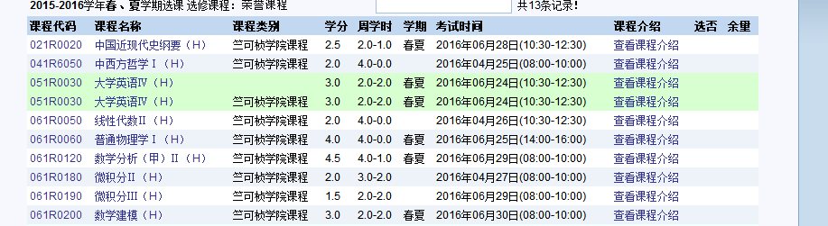
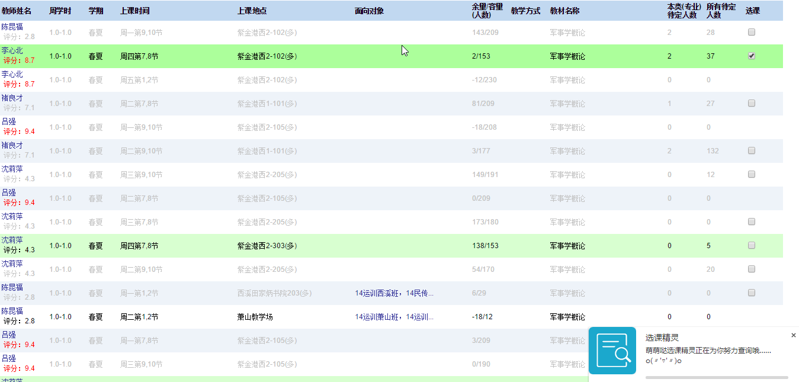

此插件为浙江大学教务系统选课助手，可查看老师在ZJU学习帝上的评分，并通过优化算法查询课程余量及上课时间冲突情况，方便选课。具体功能如下：
设置菜单：可点击浏览器扩展工具栏的图标调出
如果发现插件某项功能不正常，请检查此设置菜单是否全部开启。
插件目前对于选课页面有效，绿色表示可选课程：

进入详情选课界面后，插件开始自动查询，右下角和浏览器标题栏会提示当前状态信息，时间冲突课程将以灰色标注，余量为0的课程其复选框将消失，同时，可选课程将以绿色标注：

检查浏览器地址栏最右端的浏览模式（某些浏览器如猎豹浏览器请尝试在网页上单击鼠标右键，选择“切换到极速模式”），插件不能在有E字样的兼容模式中使用。建议换成“极速模式”。若还不能正常使用，请尝试升级浏览器至最新官方版本，清除缓存。若仍未能正常使用，请联系作者。


由于选课任务的重要性，目前此插件只在小范围内试用，如要使用请点击“申请内测”开通权限。
请自行寻找相应浏览器的插件安装教程，若确实无法安装请联系插件开发者。
目前来说支持以chromium为内核的浏览器。
完美支持插件的浏览器(最新版)有: \(^o^)/
- Google Chrome
- Google Chromium
- 360极速浏览器
- 枫树极速浏览器
- 360安全浏览器
- 百度浏览器
- QQ浏览器
- 猎豹浏览器
常见不支持的浏览器(有自己专用的扩展格式): ╮(╯_╰)╭
- Firefox
- Safari
- 遨游浏览器
- Internet Explorer(6、7、8、9、10、11...)
其他浏览器请自行尝试。